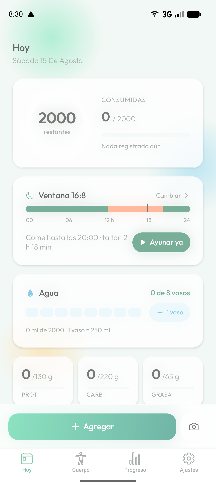
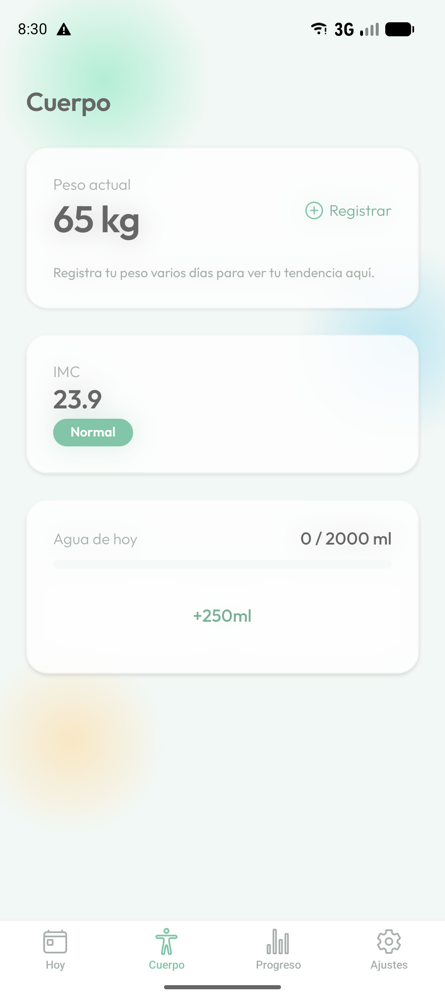
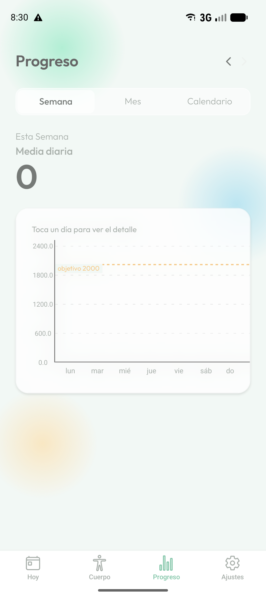

📷
Una foto y listo
Fotografía el plato y Kalinda reconoce los alimentos, calcula las cantidades y te devuelve calorías, proteína, carbohidratos y grasa. Puedes corregir cualquier dato antes de guardar.
Haz una foto de lo que vas a comer y Kalinda estima las calorías y los macros. Sin buscar en listas interminables, sin pesar cada ingrediente.
Ahora mismo en pruebas cerradas en Google Play. Muy pronto en App Store.

Sin abrir cuatro aplicaciones distintas para saber cómo va tu día.
Fotografía el plato y Kalinda reconoce los alimentos, calcula las cantidades y te devuelve calorías, proteína, carbohidratos y grasa. Puedes corregir cualquier dato antes de guardar.
Busca alimentos, guarda los tuyos propios y crea plantillas para las comidas que repites. Lo que registras una vez, no vuelves a teclearlo.
Elige tu ventana —16:8, 18:6 o la que prefieras—, sigue el tiempo restante desde la pantalla de inicio y recibe un aviso cuando termine.
Añade un vaso con un toque y registra tu peso cuando quieras. Kalinda te enseña la tendencia, no el número de un solo día.
Tu meta diaria se calcula a partir de tu edad, altura, peso, actividad y objetivo. Y se recalcula sola conforme cambias.
Español, inglés, portugués, francés, alemán, italiano, ruso y árabe. La app adopta el idioma del teléfono, o eliges tú.
Edad, altura, peso, cuánto te mueves y qué quieres conseguir. Con eso calculamos tus calorías y tus macros diarios.
Con una foto, buscando el alimento o repitiendo una comida que ya guardaste.
El anillo del día, la tendencia de tu peso y tu historial completo, siempre a un toque.


Lo esencial no cuesta nada: registrar comidas a mano, buscar alimentos, el agua, el peso, tu meta diaria y todo tu historial.
Kalinda Premium añade:
Se contrata desde la app, con plan mensual o anual. Puedes cancelarlo cuando quieras desde tu cuenta de Google Play o de App Store.
Es una estimación, no una báscula. Acierta bien el tipo de alimento y se aproxima a la cantidad, pero puede desviarse —sobre todo con salsas, aceites y platos mezclados—. Por eso siempre puedes ajustar las cantidades antes de guardar. Para hacer un seguimiento y ver tendencias es más que suficiente; para una dieta médica estricta, consulta con un profesional.
La foto se envía para analizarla y obtener la estimación, y no se guarda en nuestros servidores más allá de ese momento. No se usa para publicidad ni se comparte con nadie más. Lo tienes detallado en la política de privacidad.
Sí, para sincronizar tus datos con tu cuenta y para el reconocimiento por foto. Así puedes cambiar de teléfono sin perder nada.
Sí, desde Ajustes dentro de la app, y se borra todo tu historial con ella. Si prefieres pedirlo por escrito, mira cómo eliminar tus datos.
No. Es una herramienta para llevar la cuenta de lo que comes y ver cómo evolucionas. No da consejo médico ni sirve para tratar ninguna enfermedad.